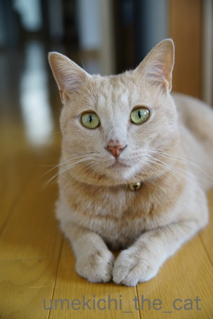
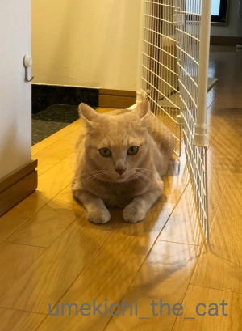
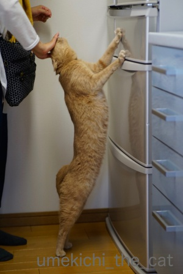
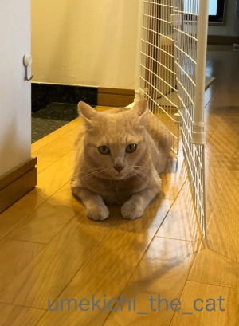
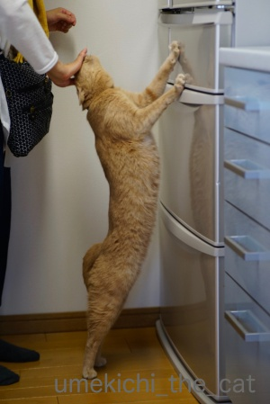

イニャバウワーはお出かけ前のお約束 [梅吉]

![[猫]](https://blog.ss-blog.jp/_images_e/101.gif) おでかけするんやな・・・・・
おでかけするんやな・・・・・
（ちょっとだけお鼻が「にじっ」としてまーす）

わし、さみしいわぁ・・・・・
としおらしくしてみても

ここはぜったいに とおさへんで
と玄関前で実力行使に出ようとしても

おかーさんのお出かけ直前、必ず冷蔵庫の前でイニャバウワー！！
梅吉選手、冷蔵庫から出てくるおやつを期待してのキメポーズ。
出来栄えで加点がもらえそうであります！
反り返りながら手に頭をこすりつけて来るんですよ。
私から見るとこんな感じ。
（14秒。音が出ます）
最後にぎゅいんとひと反りするのがポイントです＾＾
梅吉の幼い頃、出かける時の後追いがひどかったので
おやつを置いてその隙に出かけていたのですがそれがすっかり習慣になりました。
今では着替え始めるとわーわー催促が始まりますwww
梅吉、胴が長いな・・・
 ↑ガブッと一押し↑
↑ガブッと一押し↑
お天気がイマイチだった３連休。
雨は降っていなかったのでベランダでベラ串カツ。
（ベランダで揚げるとパン粉が飛び散ろうと油がはねようと気になりません＾＾
パン粉は早朝、スズメさんたちが食べてくれるし。）
この時期は何と言っても鱧！鱧カツ、サイコー！！
美味しく食べながらふと窓を見ると
めちゃ見てました(⌒_⌒;
最初はシラ〜っと寝たふりしてたんですが我慢できなくなったみたいですw
そして梅吉、やっぱり長いなぁ・・・
（ちょっとだけお鼻が「にじっ」としてまーす）
としおらしくしてみても

と玄関前で実力行使に出ようとしても

おかーさんのお出かけ直前、必ず冷蔵庫の前でイニャバウワー！！
梅吉選手、冷蔵庫から出てくるおやつを期待してのキメポーズ。
出来栄えで加点がもらえそうであります！
反り返りながら手に頭をこすりつけて来るんですよ。
私から見るとこんな感じ。
（14秒。音が出ます）
最後にぎゅいんとひと反りするのがポイントです＾＾
梅吉の幼い頃、出かける時の後追いがひどかったので
おやつを置いてその隙に出かけていたのですがそれがすっかり習慣になりました。
今では着替え始めるとわーわー催促が始まりますwww
梅吉、胴が長いな・・・
お天気がイマイチだった３連休。
雨は降っていなかったのでベランダでベラ串カツ。
（ベランダで揚げるとパン粉が飛び散ろうと油がはねようと気になりません＾＾
パン粉は早朝、スズメさんたちが食べてくれるし。）
この時期は何と言っても鱧！鱧カツ、サイコー！！
美味しく食べながらふと窓を見ると
めちゃ見てました(⌒_⌒;
最初はシラ〜っと寝たふりしてたんですが我慢できなくなったみたいですw
そして梅吉、やっぱり長いなぁ・・・

カフェオレ色の梅吉

梅吉 2023年8月10日 永眠


梅吉と出会った譲渡会

犬猫の理由なき殺処分ゼロ
妄想広告
UMEKICHI 光

爆発的に早い！
時々攻撃的！
Thanks to Mr.Boss365
爆発的に早い！
時々攻撃的！
Thanks to Mr.Boss365

イニャバウワー梅吉さん確かになが~い! 何センチあるのかな。うちの子達より大きいみたい。スリスリの時の嬉しそうなお顔が可愛くってもう出かけられなくなりそうです。そして中から覗いてる様子に爆笑。なんちゅうお顔で見てるんにゃ~。
by zombiekong (2018-09-21 03:04)
お裾分けしてもらえたのかな？＾＾
by ぽちの輔 (2018-09-21 06:01)
梅吉さん、じっと見ていますね^^
by ニコニコファイト (2018-09-21 07:05)
梅吉さん、とても綺麗なイニャバウアーです( ^ω^ )
置いていくならば、それ相応の対価がないと認めないって
いうのはお猫様としては正しい行動です=(^.^)=
下僕としては辛いですが(⌒-⌒; )
by ニッキー (2018-09-21 07:40)
イニャバウアー最高です♪
見上げるおめめたまりませんね(#^.^#)
可愛いですねぇ～♪
部屋の中からのぞく梅吉さんも
たまりません！
by きぃ (2018-09-21 08:01)
頭を撫でてもらってる時の表情が至福のようで、おやつはどーでもいいような・・・
わけではないんだ(^_^;) ペントハウスはいいですねぇ(〃'∇'〃) 市原悦子みたいな
梅吉様ですが、ぴーんと伸びている肢体は、バレエなんか似合いそうですね(^_^;)
by middrinn (2018-09-21 08:02)
ラストの写真、家政婦は見た！というイメージ(^_^;)
イナバウワー動画も可愛いー！！
by よーちゃん (2018-09-21 08:03)
おはようございます。
梅吉君のイニャバウワー！！美しいです！！キッチン床も美しい！！
見習わないといけませんね・・・・！！（￣ ￣！！）？
鱧？関西だと定番みたいですね？鱧カツ！！美味しそうです！！
梅吉君も目を丸くして見てますね？（笑）「何やってんねん？」の感じ・・・
梅吉君も一緒に「ハモりたい」みたいです！？(=^･ｪ･^=)
by Boss365 (2018-09-21 09:54)
お！一枚目の写真に「やんちゃ線」発見！
鼻の所になにげに見えてる気がする！
（インスタで #やんちゃ線 検索してみて^^）
イニャバウワーポーズ、カワイイよ^^
すりすりゴリゴリされると堪らないよね～～～
うち、これと似たようなカッコしてドアを閉めてしまうので
「ぱったん王子」と呼ばれるあおくんです。
by リュカ (2018-09-21 11:07)
おでかけ・・・できない・・・きゃわい過ぎて・・・できても涙ナシではなくらい、愛おしいですね♡
by Ginger (2018-09-21 15:10)
（笑）ベラ串鱧カツ（笑）
梅吉さん、最高ではありませんか（笑）
何故、自分は参加してない！
美味しそうな匂いだけ！って。
私も鱧カツ食べたことがありません。
梅吉さんおかーさんとの背比べ。
反り具合が良いですね。
最後のぎゅいんに寂しさが出ているようでした。
オヤツを奮発してくださいね。
by kiki (2018-09-21 15:48)
イニャバウワー！仰け反ってるね～。
家も気配を察知すると、行動を起こす子がいます。
その姿が切なくて～。「すぐ帰るから」「お土産買ってくるから」って出掛けますｗ
早く帰って来てくれるようにの彼らなりの儀式なのかな・・・(^-^;
ベラ串カツ。いいね～。
家のベランダでは無理だけど～。
梅吉くん、めっちゃ参加したそう。きゅ～んとしちゃう(≧▽≦)
by emi (2018-09-21 17:42)
zombiekongさん＞
兼ねてから梅吉の長さは測りたいと思っていたのですが
メジャーに絡んでくるので出来ないのですよw
で、梅吉がタッチしている冷蔵庫の位置まで測ってみたら
80センチでした＾＾
直立したらもう少し長いかな？
梅吉のおおよその長さは判明しましたが
私の股下よりも確実に長いということも判明しましたwww
ぽちの輔さん＞
お裾分け、
鱧を素揚げにして振る舞ったのですが・・・
鱧は好き。油も好き（舐めようとしませんか？）。
なのに素揚げの鱧はお気に召さなかったんです。
あれですよ！好き＋好き＝必ずしも好きじゃない の公式がここでもΣ(ﾟ◇ﾟ；)
ニコニコファイトさん＞
めちゃくちゃ真剣に見てますよー＾＾
視線が痛かったですwww
ニッキーさん＞
イニャバウワー、お誉めいただいてありがとうございます＾＾
下僕はひたすら無償の愛なのに
猫様はちゃんと対価を求めてきますよね・・・
梅吉の場合私が出かける用意をした後もたもたしていると
「おやつはよう！はようでかけんかい！！」と
催促するので私の不在よりもおやつなのね、とちょっと辛いですw
きぃさん＞
必死の形相でイニャバウワーです（ ´艸｀)
見上げるお目目も眼力ありますが
部屋の中から覗く梅吉の目にも
いろんな感情が見えますよねー＾＾
梅吉、目で語る漢なのかもしれません！！！
middrinnさん＞
残念ながらおかーさんの方がどーでもいいような・・・
外出するため着替えてからもたもたもしていると
「はよういかんかい！」と叱られちゃいますからw
梅吉は顔も小さいし手足が長いのバレエ向いてると思いますよー ( ´艸｀)
よーちゃん＞
うちの家政婦さん、覗き見はしますけど
家事は一切してくれませんwww
イニャバウワーは可愛いでしょう？(〃▽〃)
お出かけ前の大事なコミュニケーションです！
Boss365さん＞
イニャバウワー、なかなかの姿勢ですよね＾＾
キッチンの床は電気が反射してうまいことボロを隠してくれましたw
鱧は梅雨入り前くらいから出回って晩秋までがシーズンでしょうか。
一番美味しいのは入梅してから天神祭の時期頃までと言われているようです。
関西に住んで美味しくて驚いた食材ナンバーワンですよー。
札幌でも食べたことありましたが全然違います。
夏に関西にいらっしゃることがあったらぜひ召し上がってみてください！
鱧文化は名古屋あたりからかしら・・・
リュカさん＞
私も今度＃やんちゃ線でポストしようっと＾＾
冷蔵庫の前にくるまで「おやつ！はよう！！」と
足ガブガブしたりするのに急に可愛い態度になるのよねw
必死にぎゅんぎゅん頭を押し付けてくるのは
調子いいよねとも思っちゃいます。
そこが可愛いんだけどねーＯ(≧▽≦)Ｏ
「ばったん王子」？立ってドア閉めるの？？
それは見てみたいです！！
Gingerさん＞
きゃわい過ぎますが、変わり身も早いんですよw
出かける用意をしてからもたもたしていると
「はよういかんかい！」とお叱りを受けるので（おやつ優先）
ちょっと複雑な気分になっちゃいます。
それぐらいの方が気も楽なんですけれど＾＾
kikiさん＞
梅吉も参加したくてたまらないんですよねー。
ベランダに出たい！
でも油使っているので可哀想なんですがNGです。
(焼肉の時は炭起こしているのでNG）
梅吉も慣れててやがてふて寝するので大丈夫です（笑）
鱧は湯引きも鍋の具材も美味しいですが揚げ物が一番だと思います！
私は天ぷらあげるのが苦手なのでフライで決まりです＾＾
ぎゅいんはアピール度満点なんですが
この直前まで私に「はようでかけんかい！」と
圧力をかけまくっているのですよ・・・
どうやらおやつの方が大事な様子。
梅吉は変わり身の早さも特徴ですwww
by ちぃ (2018-09-21 17:45)
梅吉さんのイニャバウワー、最高です(^^)
でも、結構背が高いんですね。
二枚目の写真、哀愁が漂って好きです！
by kou (2018-09-21 19:24)
梅吉さんが想像以上に大きかった……( ﾟдﾟ )
ちっこい虎だ…。。。
かわいい…(ﾟ∀ﾟ)
by 猫毬 (2018-09-21 19:55)
梅吉さん、やっぱり長いわ！(*^▽^*)
そしてお出かけ前のスリスリがかわいい～♪
こてつが子猫の頃は噛んでも大丈夫なオモチャを家の奥の方へ投げて、その隙に出かけてました^^;
ベラ串、最高♪
ガラスに貼り付く梅吉さんも最高＼(^o^)／
油は怖いからかわいそうだけど一緒には無理ですよね。
我が家は揚げ物すっかり封印。鍋も卓上でグツグツではなく、コンロで調理して1回食べきりです。
by ゆきち (2018-09-21 20:33)
イニャバウワーで背伸びですね！
全身伸びると背がありますね(^^)
by ma2ma2 (2018-09-21 20:35)
長っ！！そして見事な逆三角形男らしいですわ～(*^_^*)そしてそんな顔で見上げられたらたまりませんね～♪
by palpal (2018-09-21 20:56)
たしかに長いですね(*´ω｀*)
イニャバウワー、お約束なんですね＾＾
こんな顔で後追いされたら、お出かけ中止にしてしまいそうです。
あかりは、ほとんど後追いしないので、
助かるけど、寂しいような…＾＾；
by マーヤ (2018-09-21 21:21)
イニャバウワー！何と素敵なポーズ！決まってますね。
PUMAかJAGUARのロゴのようです。
頭スリスリのお顔が可愛いですー。^^)
by yes_hama (2018-09-21 22:42)
梅吉さんは長くていいな。
出掛ける時、何かしてほしいな。
ベラってあのベラですか？
こちらでは雑魚扱いで、あまり食べません。
関西では店に並んでいると聞いた事があって、びっくりした記憶があります。
それで何度か食べてみました。白身で淡白な美味しさに驚きました(^^)
by riverwalk (2018-09-22 09:03)
ほんと、梅吉さん、長〜〜〜〜い♡
これ、オバちゃんは、めっちゃ加点してあげたいわ♪
ちぃさん!!! 今日は私の分の加点を差しあげてくださいね!!!
･･･そして、ベラ串のぞき。。もしや、ひょっこりはん???
by のらん (2018-09-22 11:01)
梅吉さん、素敵！
お鼻にじっとしてるお顔からの～～
まさかのイニャバウアー技☆大きく直立伸び～の反り返り～の頭こすりつけ！最高ですね～ネコリンピックで加点がもらえるメダル技♪
ベラ串カツ、美味しそう～＾＾
そ、そこで見ているお顔もツボ、猫は伸びるけど‥梅吉さんって長目ですよね＾＾
by sana (2018-09-22 15:03)
emiさん＞
イニャバウワー、良い反りしてるでしょう？ ( ´艸｀)
私もお家を出るとき
「すぐ帰るよ」とか「何時頃だよ」とか
場合によっては「シッターのお姉さんが来るから」と
ちゃんと梅吉に説明して出かけるようにしています＾＾
（ちゃんと理解してるってzombiekongさんに教えてもらったの）
早く帰ってきてほしいって気持ちは間違いないだろうけれど
最近梅吉は帰ってもガン無視なのよwww
眠さの方が勝るお年頃になったみたい（涙）
ベランダは、私たちが酔っ払っているときはNGにしてます！
かわいそうなんだけど、もしもの時ケアできないから〜(^_^;)
kouさん＞
梅吉、手足が長いので（自慢＆羨ましい！）体高も高めなんですが
胴も長〜いです。そしてよく伸びるwww
２枚目の梅吉、哀愁を漂わせておりますが
「おやつはまだかいな」とも思ってますよー(≧▽≦)
猫毬さん＞
小柄な外猫さんしかリアルにみてないので
飼い猫さんってどのくらいの大きさが普通なのか忘れちゃったんですが・・・
猫飼っていて、うちに遊びに来る人は雄猫はやっぱり大きいねって言ってます＾＾
梅吉は骨格もがっちり筋肉もガチムチ系なので抱っこすると良い感じでーす。
虎！それは素敵な褒め言葉だわ！！
私はだらしなく寝てる雌ライオンそっくりだって思ってます( ´艸｀)
ゆきちさん＞
長い、ですよね＾＾どこまで伸びるかな？褒めたら伸びるかしら・・・
やんちゃ坊主がいるお宅はやっぱりお出かけの際は苦労があったのですね。
私は今でも出かける前は靴の準備は怠りなく
靴は引っ掛けた状態で玄関の外へ。
玄関外で靴を履いていたらお隣の方に「いっつも外で靴履くんですねw」って
言われたことがあります(〃ω〃)
卓上調理も封印されているのですね！
やんちゃ坊主だと卓上IH調理器でも怖いかもしれません・・・
にゃんこの安全第一、ですねー＾＾
ma2ma2さん＞
梅吉伸び縮み自在です＾＾
寝て伸びるともっと長いような気もしますwww
palpalさん＞
ナノ君も結構長いかなって思ってまーす＾＾どうなんだろ？？？
可愛い顔して見上げてますが目的はおやつ！まっしぐらですw
マーヤさん＞
イニャバウワーとごゴロりんちょ♡がお約束なんですが
手抜きする時もあるんですよ(^_^;)
おんにゃの子の方が下僕のお出かけにはクールに対応されるような・・・
男の子は甘えん坊なんでしょうか＾＾
yes_hamaさん＞
かっこいいロゴマークを想像していただいてありがとうございます！
今後もこのシュッとしたシルエットを保てるように
頑張ってもらわなければ＾＾
おねだりの時は可愛いお顔になるんですが
直前までふて顔で「はよういけー！」って抗議しているんですよw
(私の外出よりもおやつの方が重要らしいです。。。）
riverwalkさん＞
あら、ごめんなさいm(_ _)m
「ベラ」はベランダのベラ、でした。紛らわしかったですよね。
で、ベラは美味しいのですね！
気にして見ていないせいもありますがスーパーなどでは見たことが無いような・・
調べてみると西日本の一部の地域で「キザミ」とか「ギザミ」と呼ばれ
一般的に食べられているとの事。
食文化の多様性のある関西なのでどこかで出会うかも！！
見つけたら是非食べて見たと思います＾＾
のらんさん＞
オバちゃん加点、了解しましたm(_ _)m
オバちゃんは話を盛るのも得意ですが加点も盛っちゃいますよ＾＾
人類史上初の400点越えも夢では無いかもしれません・・・・
あ！ひょっこりはん！！
実はつい3日ほど前まで知らなかったのですが
友人に教えてもらってググって見たばかりです。
梅吉版ひょっこりはん、書籍化されるかも！？
sanaさん＞
イニャバウアーを武器に次回のネコリンピックでは
金メダルを狙いたいと思いまーす＾＾
お鼻にじっ、はこのところのむしむしお天気で復活してきました＾＾
梅雨時期の風物詩が秋にも！です。
梅吉は特に伸縮性に富んだにゃんこなのかもしれませんw
どこまで伸ばせるか、注目してくださいませ(^_－)☆
by ちぃ (2018-09-22 21:22)
イニャバウアーの梅さま、ちょっとワンコっぽいです^^
屋外で料理！楽しそうです。
おや、家政婦は見た・・・（笑）
by Ja-Kou66 (2018-09-23 00:35)
目を細めてすりすりするのがめっちゃかわいい。
おでかけやめたくなりそう。
でもそうするとおやつなしか^m^
by ふにゃいの (2018-09-23 21:54)
イニャバウワー 凄い伸びてるニャ（ﾟ□ﾟ）
by 英ちゃん (2018-09-24 00:15)
Ja-Kou66さん＞
梅吉、わんこ説( ´艸｀)他にも色々な他動物の説がありますwww
ベランダお食事は開放感もあって楽しいですよー＾＾
虫刺されというおまけもついてきますがw
ふにゃいのさん＞
おねだりするときは可愛い顔する調子の良い梅吉ですw
お出かけしてもしなくてもこのシチュエーションになると
おやつなしはあり得ないのですよ・・・
ものすごく悲しそうな顔でうずくまりますから。
下僕を操る術を知っております (^_^;)
英ちゃんさん＞
梅吉のイニャバウワーはオリンピック（ネコリンピック？）級かと＾＾
by ちぃ (2018-09-24 15:14)
油の件、炒め物をする際に先にフライパンにサラダ油を入れておき
目を離した隙に綺麗に掃除された事があります（爆）
by ぽちの輔 (2018-09-25 06:48)
ぽちの輔さん＞
それはー！！
お腹壊しませんでしたか？
子供の頃飼ってた猫は油舐め過ぎでお腹下しましたよwww
江戸時代の怪談見ても妖怪猫は行灯の油を舐めにくるので
今も昔もにゃんこは油好きなんですよねw
by ちぃ (2018-09-25 14:23)